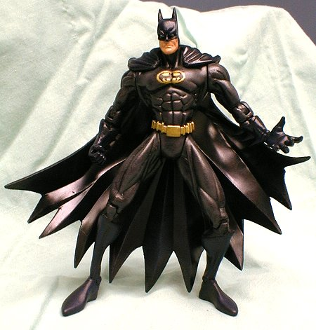

|  | Batman was made from a LOTDK Dark Knight Batman. I added 8 new points of articulation, for a total of 13. The ankle and knee joints came from X-Man, and the elbow and forearm joints came from a Skeleton Warriors figure. I also trimmed the cape, ears, and arm spines. The figure has a gray drybrush on the body and dark blue on the cape, cowl, boots, and gloves (doesn't show well in pictures). The intention was to create a Batman figure that closely resembles the Morrison JLA version. This custom was inspired directly by Valors' excellent version. The new articulation was inspired by Spinner's incredible multiposable custom figures. Unfortunately, the added articulation turned out to be mostly an academic excercise. The cape restricts the figure's movement, and the lack of ball-jointed hips and shoulders doesn't help. I wrote a how-to article that explains the joint-addition process. |
"Some days you just can't get rid of a bomb!" |